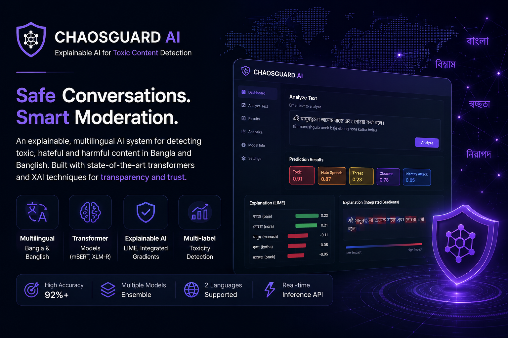
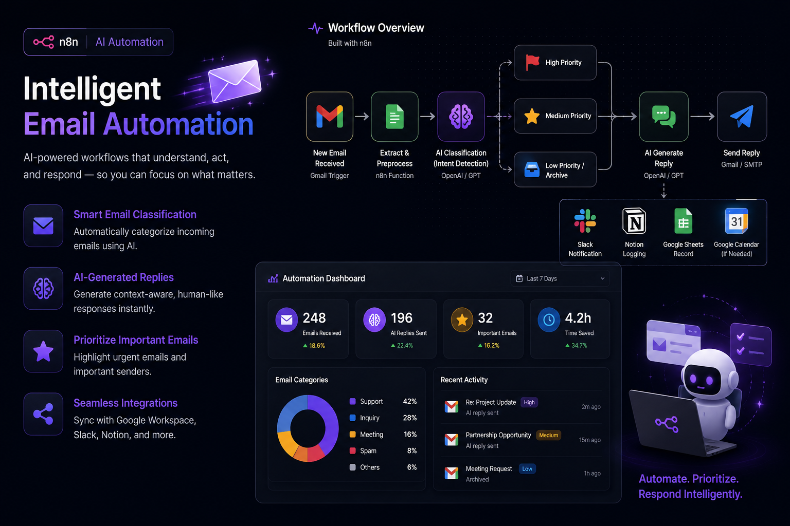
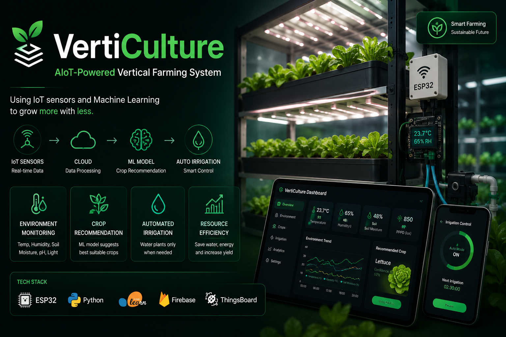

AI Solutions
Design and develop intelligent AI applications using Machine Learning, LLMs, RAG, Computer Vision, and AI automation to solve real-world problems with scalable and efficient solutions.
Available for work
Motivated AI Engineer & Research Enthusiast. AI Engineer specializing in Machine Learning, LLMs, RAG, and Computer Vision, with a passion for research-driven innovation and real-world intelligent systems.

What I do
Design and develop intelligent AI applications using Machine Learning, LLMs, RAG, Computer Vision, and AI automation to solve real-world problems with scalable and efficient solutions.
Assist with AI research projects, literature reviews, experiment design, model evaluation, and academic paper writing for conferences and journals following IEEE and Springer standards.
Build smart IoT systems using ESP32, Arduino, sensors, cloud connectivity, and edge AI for automation, monitoring, robotics, and intelligent real-world applications.
Portfolio

An explainable multilingual AI platform for detecting toxic, hateful, and harmful content in Bangla and Banglish. Built using Transformer-based language models with uncertainty estimation, Integrated Gradients, and LIME to provide transparent, trustworthy, and interpretable content moderation.
View Project →An intelligent Retrieval-Augmented Generation healthcare assistant that combines semantic search, reranking, and LLMs to deliver reliable medical information from trusted clinical documents.
View Project →
An AI-powered email automation system built with n8n that classifies incoming emails, generates context-aware replies, prioritizes important messages, and streamlines communication through intelligent workflow automation.
View Project →
A smart vertical farming platform integrating ESP32, IoT sensors, cloud connectivity, and machine learning for intelligent crop recommendation, automated monitoring, and precision agriculture.
View Project →
About Me
I'm Rafiul Rabbi Zahid, an AI Engineer passionate about building intelligent systems that solve real-world problems. My interests span Artificial Intelligence, Large Language Models, Retrieval-Augmented Generation (RAG), Computer Vision, Explainable AI, and AI-powered automation.
Alongside developing practical AI applications, I actively conduct research in AI and AIoT, publish academic papers, and explore emerging technologies that bridge intelligent research with real-world deployment.
Research Papers
AI Projects
Hackathon Winner
Research Internships
Technologies & Tools
Research
My research focuses on Artificial Intelligence, Machine Learning, Large Language Models, AIoT, Computer Vision, and Explainable AI, with publications in IEEE and international peer-reviewed venues.
IEEE 2nd International Conference on Quantum Photonics, AI & Networking (QPAIN 2026)
ICECCT 2026
PECCII 2026, PUST
International Journal of Information Engineering and Electronic Business (IJIEEB), MECS Press • 2026
Contact
I'm always open to discussing AI research, collaborations, internships, freelance opportunities, or innovative AI and AIoT projects.
Gazipur, Bangladesh